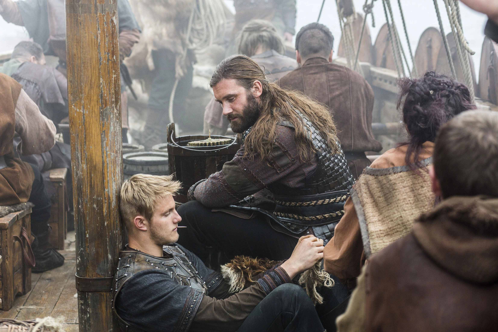
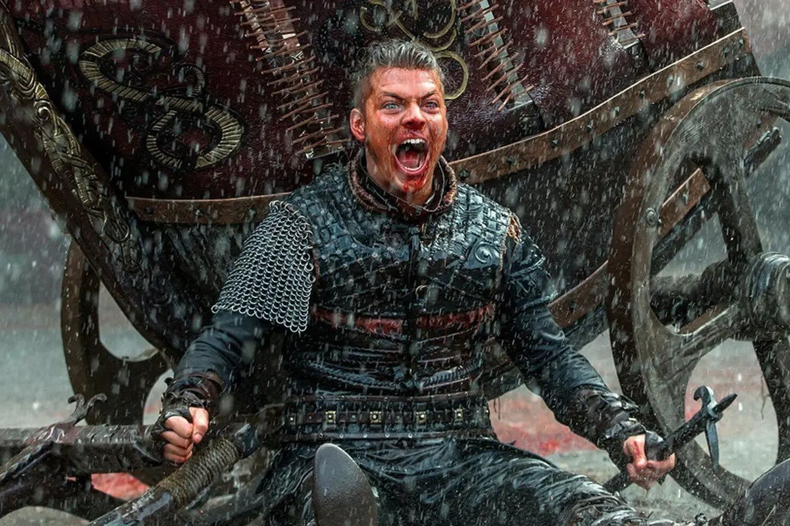

Temporada 1
[9 episodios]
La historia empieza en Escandinavia, donde el guerrero Ragnar Lothbrok tiene un plan secreto que cambiará para siempre la historia de los guerreros vikingos. Pero para eso deberá enfrentarse al Conde Haraldson, líder del pueblo donde viven y que no estará dispuesto a permitir que Ragnar se alza con toda la gloria.
Temporada 2
[10 episodios]
Nos centramos en Ragnar Lothbrok, un guerrero joven y hombre de familia quien busca conquistar nuevas tierras tras el océano. Ahora es Conde, aliado con el Rey Horik. Con más poder que nunca antes, busca ir al oeste y explorar nuevos reinos.
Sin embargo, se debe pagar un precio por el ascenso a la gloria. La segunda temporada trae varios crisis de fe, de poder y de relaciones. Hermanos se enfrentan el uno contra el otro, las lealtades pasan de amistad a enemigos y se forman alianzas inesperadas en el nombre de supremacía. Las indiscreciones de Ragnar amenazan con arruinar su matrimonio con Lagertha, lo cual lo separa de su querido hijo.

Temporada 3
[10 episodios]
Empieza con Ragnar como el rey y sigue la gran responsabilidad que ahora cae sobre el antiguo granjero.
Con la promesa de tierras nuevas en Inglaterra, Ragnar guia a su gente a un destino incierto en las costas de Wessex. El Rey Ecbert ha hecho muchas promesas y se sigue sin ver si las mantendrá.Pero Ragnar sigue buscando algo más y lo encuentra en Paris. Se rumora que es impenetrable por lo que Ragnar y los demás vikings deben unirse para entrar y poner a los vikings en la historia.
Temporada 4
[20 episodios]
La tercera temporada culminó con la batalla extraordinaria en Paris, donde Ragnar logró una victoria, pero aun así regresa a Kattegat gravemente enfermo. Rumores de su muerte empiezan a galvanizar a las fuerzas que quieren subir al trono, incluyendo a su esposa, la Reina Aslaug y su hijo mayor, Bjorn. Mientras tanto, Lagertha continúa las batallas de poder con el manipulador Kalf, antiguamente segundo al mando. Rollo traiciona su herencia Vikinga quedándose en Frankia, y Floki es arrestado a causa de sus acciones brutales contra el padre cristiano Athelstan.

Temporada 5
[20 episodios]
En Noruega, tras la muerte del Rey Ragnar Lothbrok y su hijo Sigurd, los hijos de Ragnar están en guerra civil. Ivar se proclama rey de Kattegat, apoyado por Hvitserk y el Rey Harald. Ubbe se queda con Lagertha en contra de esta alianza. En Inglaterra, el Rey Aethelwulf y el obispo Heahmund pelean contra los invasores Nórdicos. En el Mar Mediterráneo, Bjorn sigue su destino mientras él y Halfdan exploran el norte de África. En el océano Atlántico, Floki descubre algo que cambiará el mundo de los vikingos por siempre.
Temporada 6
>
[20 episodios]
Se centra principalmente en el reinado del rey Bjorn sobre Kattegat, y la segunda parte en Ivar y las aventuras en 'Rus', y la expedición de Ubbe a Islandia. En el final de la sexta temporada comienza con el fin de la era de Bjorn, ya que ha sido gravemente herido, la destrucción de Kattegat, la muerte de Lagertha y el final de la guerra de los RUS.
